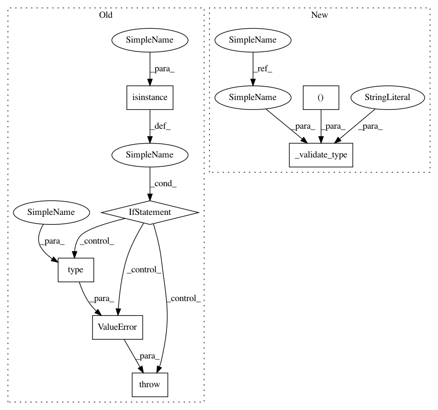

9613c71f24b8f3f289fcbace86be57dcc66360ed,mne/channels/interpolation.py,,_do_interp_dots,#Any#Any#Any#Any#,112
Before Change
from ..epochs import BaseEpochs
from ..evoked import Evoked
if isinstance(inst, (BaseRaw, Evoked)):
inst._data[bads_idx] = interpolation.dot(inst._data[goods_idx])
elif isinstance(inst, BaseEpochs):
inst._data[:, bads_idx, :] = einsum(
"ij,xjy->xiy", interpolation, inst._data[:, goods_idx, :])
else:
raise ValueError("Inputs of type {} are not supported"
.format(type(inst)))
@verbose
def _interpolate_bads_eeg(inst, origin, verbose=None):
Interpolate bad EEG channels.
After Change
from ..io.base import BaseRaw
from ..epochs import BaseEpochs
from ..evoked import Evoked
_validate_type(inst, (BaseRaw, BaseEpochs, Evoked), "inst")
inst._data[..., bads_idx, :] = np.matmul(
interpolation, inst._data[..., goods_idx, :])
In pattern: SUPERPATTERN
Frequency: 3
Non-data size: 7
Instances
Project Name: mne-tools/mne-python
Commit Name: 9613c71f24b8f3f289fcbace86be57dcc66360ed
Time: 2020-07-20
Author: larson.eric.d@gmail.com
File Name: mne/channels/interpolation.py
Class Name:
Method Name: _do_interp_dots
Project Name: mne-tools/mne-python
Commit Name: 9613c71f24b8f3f289fcbace86be57dcc66360ed
Time: 2020-07-20
Author: larson.eric.d@gmail.com
File Name: mne/channels/interpolation.py
Class Name:
Method Name: _do_interp_dots
Project Name: mne-tools/mne-python
Commit Name: 91473147e57464173dedb00ce20f3d5aefd883bd
Time: 2020-10-12
Author: larson.eric.d@gmail.com
File Name: mne/viz/ica.py
Class Name:
Method Name: plot_ica_properties
Project Name: mne-tools/mne-python
Commit Name: 7c1233ba612bdb08d640c924ef4220b2fe13fb71
Time: 2020-09-25
Author: larson.eric.d@gmail.com
File Name: mne/io/reference.py
Class Name:
Method Name: add_reference_channels